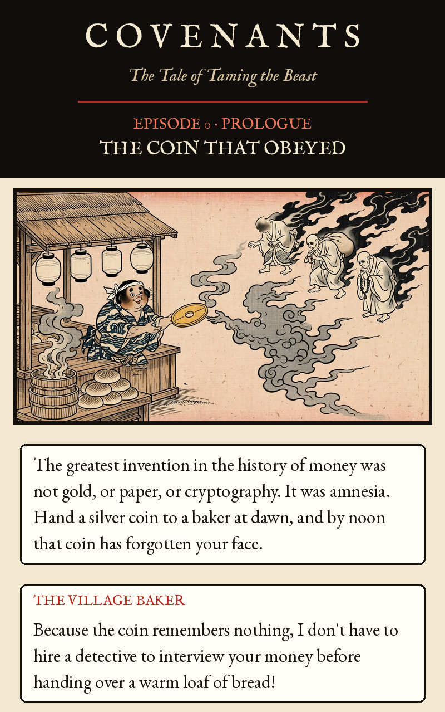
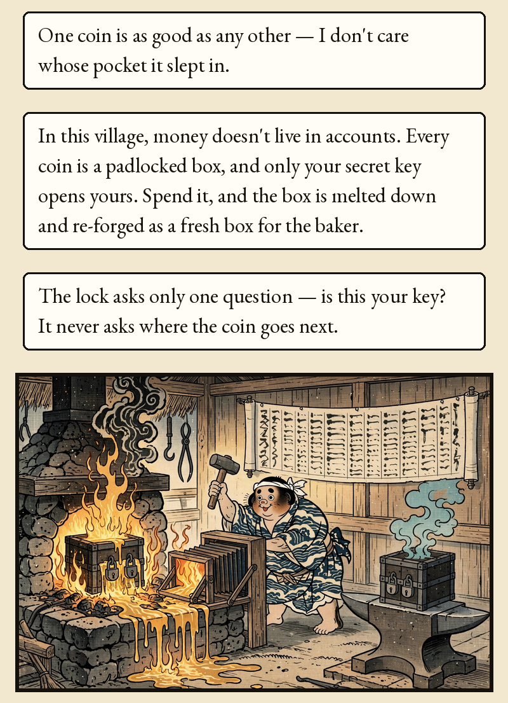
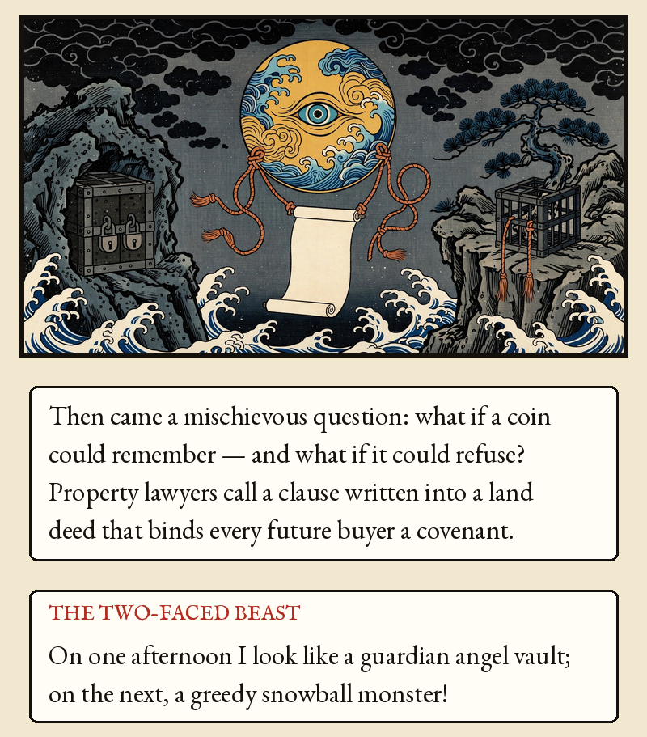
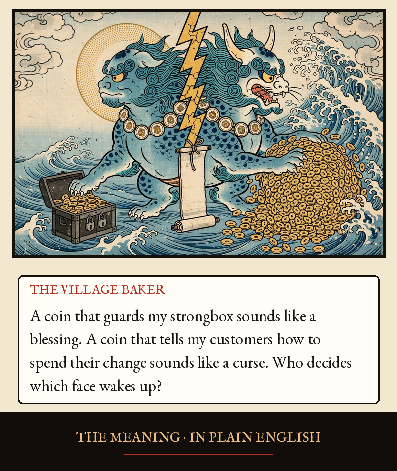
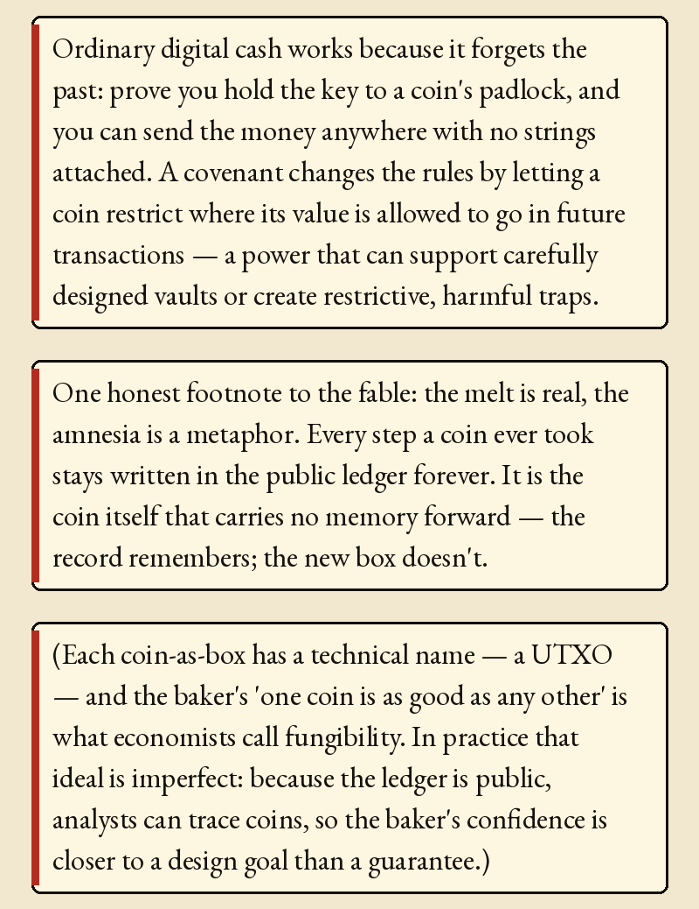
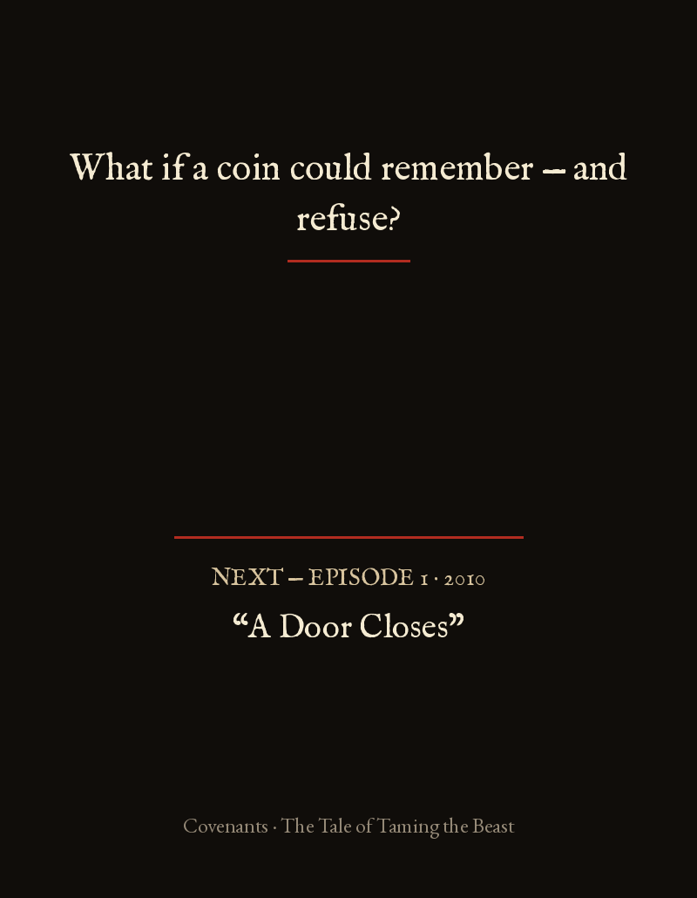

Episode 0 · The Coin That Obeyed






Episode 0 · The Coin That Obeyed — Prologue
The greatest invention in the history of money was not gold, or paper, or cryptography. It was amnesia. Hand a silver coin to a baker at dawn, and by noon that coin has forgotten your face.
THE VILLAGE BAKER: Because the coin remembers nothing, I don't have to hire a detective to interview your money before handing over a warm loaf of bread! One coin is as good as any other — I don't care whose pocket it slept in.
In this village, money doesn't live in accounts. Every coin is a padlocked box, and only your secret key opens yours. Spend it, and the box is melted down and re-forged as a fresh box for the baker. The lock asks only one question — is this your key? It never asks where the coin goes next.
Then came a mischievous question: what if a coin could remember — and what if it could refuse? Property lawyers call a clause written into a land deed that binds every future buyer a covenant.
THE TWO-FACED BEAST: On one afternoon I look like a guardian angel vault; on the next, a greedy snowball monster!
THE VILLAGE BAKER: A coin that guards my strongbox sounds like a blessing. A coin that tells my customers how to spend their change sounds like a curse. Who decides which face wakes up?
THE MEANING · IN PLAIN ENGLISH
Ordinary digital cash works because it forgets the past: prove you hold the key to a coin's padlock, and you can send the money anywhere with no strings attached. A covenant changes the rules by letting a coin restrict where its value is allowed to go in future transactions — a power that can support carefully designed vaults or create restrictive, harmful traps.
One honest footnote to the fable: the melt is real, the amnesia is a metaphor. Every step a coin ever took stays written in the public ledger forever. It is the coin itself that carries no memory forward — the record remembers; the new box doesn't.
(Each coin-as-box has a technical name — a UTXO — and the baker's 'one coin is as good as any other' is what economists call fungibility. In practice that ideal is imperfect: because the ledger is public, analysts can trace coins, so the baker's confidence is closer to a design goal than a guarantee.)
What if a coin could remember — and refuse?
Bitcoin Developer Guide, Transactions: https://developer.bitcoin.org/devguide/transactions.html. Covenant is a broad term for conditions constraining future spends; outcomes depend on the construction. UTXO history remains public; 'forgetting' is a metaphor.